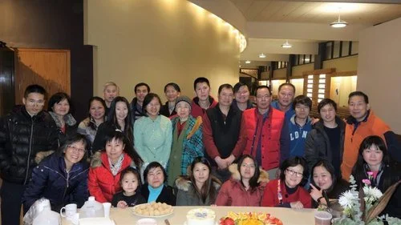

食物與祝福團契
Food and Blessing Fellowship
食物與祝福團契
Food and Blessing Fellowship
餐館福音團契是羅德島華人基督教會的一個外展小組。我們的使命是將神的福音帶進每一家餐館，讓更多人認識耶穌，生命得到改變。
The Restaurant Gospel Fellowship is an outreach group of the Rhode Island Chinese Christian Church. Our mission is to bring the Gospel of God to every restaurant, so that more people can come to know Jesus and have their lives transformed.
由於餐飲業的弟兄姊妹及基督徒週日忙於工作，無暇到教會崇拜，我們的團契每週二晚上十時三十分聚會。內容包括分享見證、查經、交流生命經歷、互相提醒與幫助，每月第二個週二還設有晚間擘餅聚會。我們誠摯邀請新舊朋友及基督徒出席。
Because our fellow believers in the catering industry and Christians are busy with work on Sundays and don't have time to come to church for worship, our fellowship meets every Tuesday evening at 10:30 PM. The content includes sharing testimonies, Bible study, exchanging life experiences, reminding and helping each other, and we also have an evening communion service on the second Tuesday of each month. We sincerely invite Christians and friends, both new and old, to attend.
為方便大家，目前暫時繼續以網上形式聚會。ZOOM 號碼為 8585769274。
For convenience, we will continue to meet online for the time being. The ZOOM number is 8585769274.
願神賜福給您，期待每個週二晚上與您相見。
May God bless you, and I look forward to seeing you every Tuesday evening.
♥ 聚會時間：每週二晚上十時三十分（網上 ZOOM） ♥
♥ Meeting Time: Every Tuesday evening at 10:30 PM (Online via ZOOM) ♥
團契相片集
Fellowship Gallery

Join Us Online
無法親自出席？線上觀看直播或隨時收看錄影。
Can't make it in person? Watch our services live or access recordings anytime.